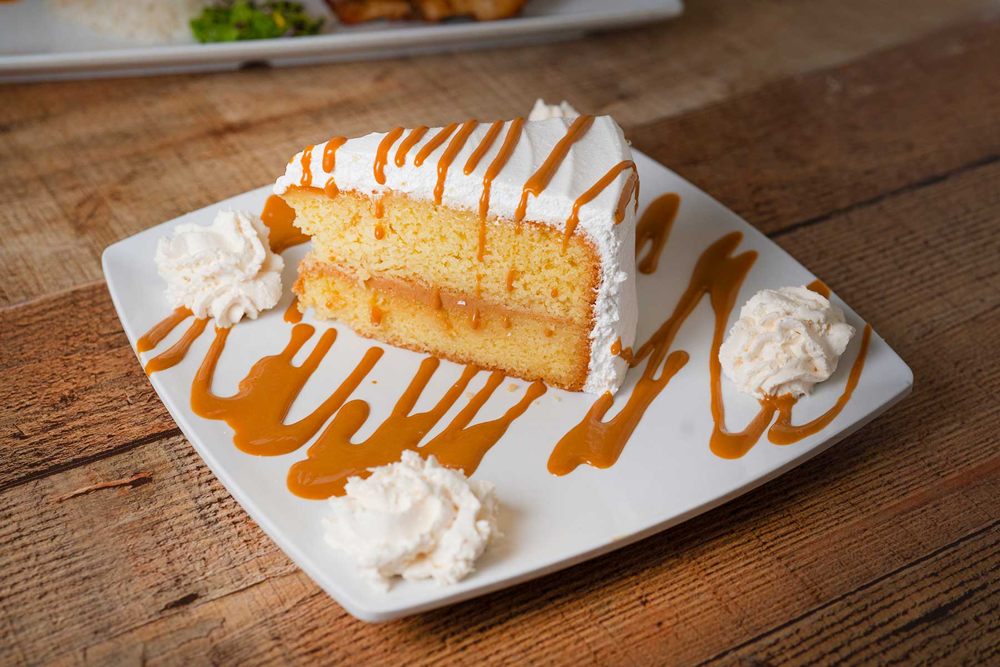
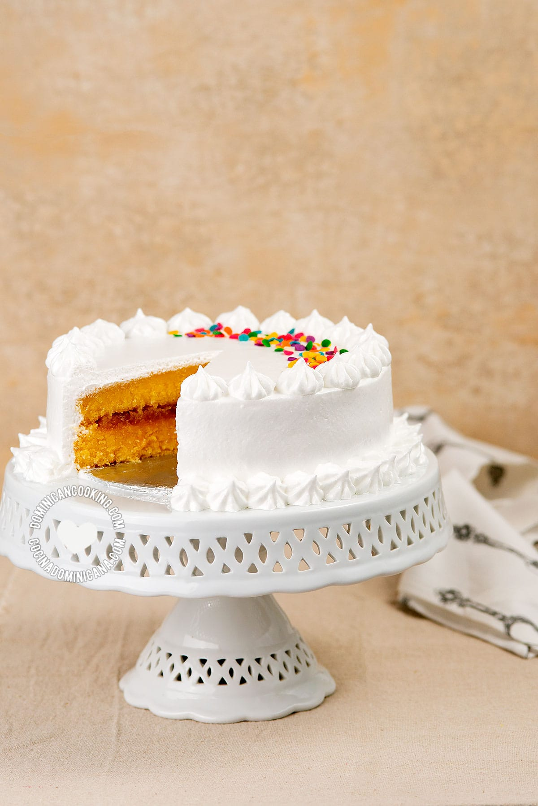

Bizcocho Dominicano!

What is it?
Dominican cake is a chiffon-style cake. The most important features of the Bizcocho Dominicano (Dominican Cake) are that it is very 'airy'
and moist. It contains a large amount of butter, about a third of it in fact, and a large volume of air, producing a cake that virtually
dissolves in your mouth. The traditional filling is made from pineapple, which gives it the faintest of tartness but you can use what you
prefer.The icing, which we call "suspiro" is actually meringue, not to be confused with merengue which is something Dominicans dance to,
not something we eat. This recipe does not go over how to make the suspiro or the filling but I will include a link below to the site where
I copied all this from lol.
https://www.dominicancooking.com/bizcocho-dominicano-dominican-cake#wprm-recipe-container-19279
Equipment
- Well-calibrated oven, or oven and oven thermometer
- Stand mixer with 4. 5 quarts [4.2 l] bowl or bigger
- Scale
- Two 8" inch [20 cm] round cake pans
Ingredients
- 2 tablespoon salted butter, at room temperature
- 2 tablespoon all-purpose flour
- ½ pound all-purpose flour, 225 grams
- 1 ½ tablespoons baking powder
- ½ pound salted butter, 225 grams, at room temperature
- ½ pound sugar (white, granulated), 225 grams
- 6 egg yolk, plus enough egg white to weigh ½ lb in total, at room temperature
- 1 teaspoon lime zest, freshly grated
- 2 teaspoons vanilla extract
- ½ cup orange juice, at room temperature

Preparation
- 2 hours before you start, measure and weigh all the ingredients. Leave outside the fridge so they are all at room temperature when it's time to start baking.
Have filling ready.
- Start baking. Preheat oven to 350 °F [175 °C], or 325 ºF [163 ºC] for convection ovens (see notes).
Mix the flour and baking powder and sift together. Divide into thirds and set aside.
Grease the baking pans, and lightly dust with flour. Set aside.
- Using the paddle attachment of your mixer, beat together butter and sugar at medium speed until the butter is light and fluffy and has a very light yellow color (about 4 mins).
- Add the eggs a third at a time, and continue beating until each third is well incorporated into the mixture (about 2 mins) before adding the next third.
Once eggs are added, with the mixer still running at mid-speed, add in vanilla and lime zest.
- Increase speed to mid-high, and pour in a third of the juice, when it is well combined (about two mins) add a third of the flour and mix for another 2 mins.
- Pour in another third of the juice and mix for another 2 mins or until it is very well combined. Follow by adding another third of the flour, and mix for another 2 mins or until it is very well combined.
- Pour in the last third of the juice and mix for another 2 mins or until it is very well combined. Follow by adding the last third of the flour, and mix for another 2 mins or until it is very well combined.
- As soon as you've stopped mixing the last batch of flour turn off the mixer, you should have obtained a fluffy batter with a smooth and even consistency. If necessary, scrape the sides and run for another minute to combine any unmixed batter that was stuck to the sides.
Pour in half the batter in each baking pan, making sure not to disturb the butter/flour cover.
- Bake 30 minutes, or until a knife inserted in the center comes out clean (don't open the oven until after at least 30 mins). Cool to room temperature before removing from the pan.
- To assemble, cut the cake crust, making them even. Make an outer circle with the icing, and fill with the filling of your choice, spreading evenly. Place the other cake on top.
- To decorate the cake spread the icing of your choice on top and around the cake, add decoration according to your taste and skills.
- This cake is best served at room temperature, in the fridge the butter will harden and the cake won't have the proper consistency. You can refrigerate for a couple of days, but put it outside the fridge until it reaches room temperature before serving.
Back to Homepage